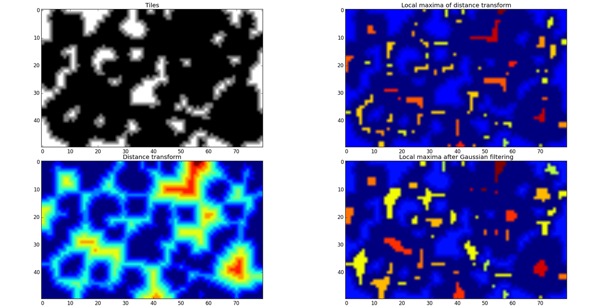
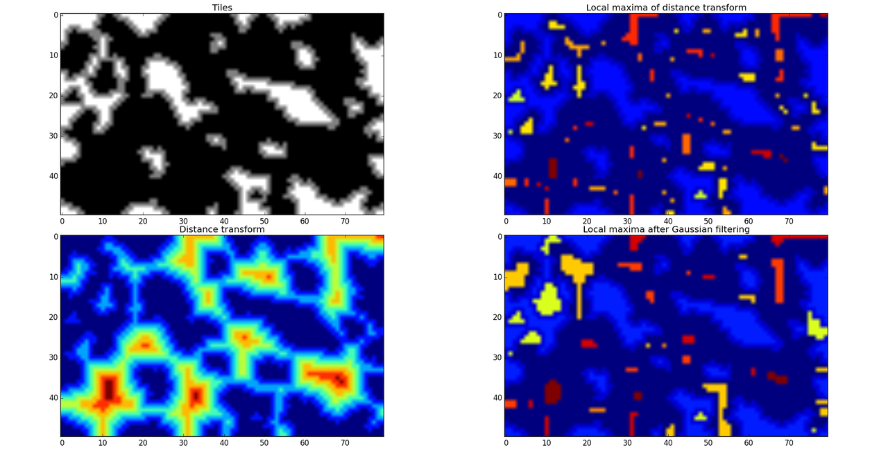

Defining Spaces
Here's what I've managed for defining spaces so far. Just kept blindly using a number of scipy image processing functions till I managed to figure out what they did. Quickly noticed that the distance transform function had potential, but I've spent an entire day trying to learn how to segment the map using that data. Attached are a couple of plots I generated showing the kind of information I've been able to extract. It looks like taking the local maxima of the distance transform does reasonably well for identifying distinct spaces. Now I think I need something similar to the watershed transform to actually establish the boundaries of each room.
